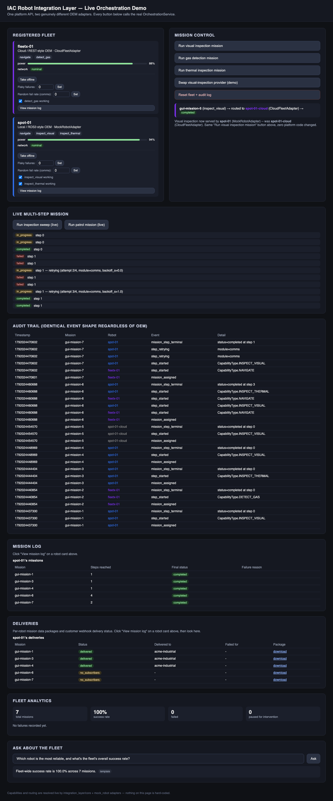

webapp/output/gui_demo.mp4 — the same system, driven live in a real browser.Mission/MissionStep/MissionStepStatus/FailureReason schema, shared by every adapter.mock_robot_node.py and cloud_fleet_adapter.py are the only two files that know anything vendor-specific.test_platform_agnosticism.py) that has shown a byte-identical diff since before this round of work began.Every box above is independently testable in isolation. A bug in retry handling cannot hide inside cross-step sequencing, and a bug in sequencing cannot hide inside a specific adapter's quirks — each layer is unit-tested against a stub for the layer below it, and integration-tested end to end against the two real adapters.
Capability-based lookup — "who can do X right now" — never a hardcoded robot name.
Indexed by mission and robot at write time — O(k) reads, not a full scan.
Incremental fleet/robot stats, updated automatically the instant a mission ends.
OrchestrationService.assign_mission(mission) resolves which robot serves the mission's first step by capability (or honors an explicit pin), records a mission_assigned audit event, and makes exactly one execute_mission_step() call — then returns immediately.
mission = Mission(mission_id="m-1", steps=[MissionStep(capability_type=INSPECT_THERMAL, target="wp1")])
service.assign_mission(mission) # non-blocking: kicks off step 0, returns promptly
status = service.wait_for_completion("m-1") # polls/advances/retries to terminal
This non-blocking contract is deliberately pinned: a caller gets an immediate ASSIGNED/IN_PROGRESS status back, never a long blocking call — orchestration core stays in control of polling cadence.
StepRunner owns exactly one step's execution, polling get_status() to a terminal result and firing a progress callback after every single poll — not just the final one. MissionExecutor composes StepRunner across however many steps a mission has, re-resolving the adapter for each step (so a multi-step mission can genuinely span two different robots).
def on_progress(status):
print(f"step {status.step_index}: {status.status.value}")
service.run_mission_with_progress(mission, on_progress)
# step 0: in_progress
# step 0: completed
# step 1: in_progress
# step 1: completed
The GUI's live timeline and the /api/missions/<id>/stream Server-Sent-Events endpoint are both built directly on this same callback — nothing is polled or re-derived separately for the browser.
Every failure is classified into a SystemModule (comms / sensor / power / safety / planning), and each module has its own retry policy — a literal, readable table, not an if/elif chain.
COMMS: retryable, 4 attempts, backoff 0.0s / 1.0s / 2.0s SENSOR: never retries, pauses for operator intervention POWER: never retries, mission aborts SAFETY: never retries, pauses for operator intervention PLANNING: never retries, mission aborts
Faults are hybrid: deterministic primitives (set_offline, set_flaky(n), set_sensor_failed) for reproducible demos and tests, and probabilistic ones (seeded random_failure_rates) for realistic unpredictable field conditions — both funnel through the exact same retry table.
The instant a mission reaches any terminal state (completed, failed, aborted, or paused-for-intervention), MissionAnalytics.record_mission_outcome() fires with no manual trigger and no batch job. Reading current stats afterward is an O(1) dict lookup, never a replay of the audit log.
The GUI's Fleet Analytics panel and the "Ask about the fleet" natural-language query box (template engine by default, real Anthropic Claude if ANTHROPIC_API_KEY is set) both read directly from this live state.
On a COMPLETED mission only: sensor-capability steps captured a local artifact as they completed (no network); the robot then batch-uploads everything to the platform in a single network-dependent step — reusing the exact same FaultProfile and COMMS retry policy from slide 6, not a separate retry mechanism.
Customers are matched by CustomerRegistry (which robots are at their site, which capabilities they subscribe to) and receive a real HTTP POST — mock_customer/customer_server.py is a genuine second Flask process, not a stub.

webapp/output/gui_demo.mp4cd iac-robot-integration python3 -m venv .venv .venv/bin/pip install pytest matplotlib pillow flask .venv/bin/python -m pytest tests/ -v # 195/195 -- conformance, platform-agnosticism, retry/fault-injection, # analytics, LLM-query, and data-delivery, all passing
No ROS2 install, no real robot hardware, no cloud account, and no network access required — everything here is pure Python, runs fully offline, and the test suite makes zero real network calls (the one optional exception, a real Anthropic API call, is gated behind an environment variable you have to opt into).
.venv/bin/python demo/run_demo.py # runs 3 missions across both OEMs, then a 4-posture resilience demo, # then a real local webhook-delivery demo -- writes demo/output/ .venv/bin/python webapp/app.py # open http://127.0.0.1:5055 in a browser -- click through the live GUI .venv/bin/pip install playwright .venv/bin/playwright install chromium .venv/bin/python webapp/record_gui_demo.py # re-records webapp/output/gui_demo.mp4 against the real running app
Every one of these runs the actual platform code — nothing here is a mockup, a staged recording, or hand-edited output.
DESIGN.md — the full design doc this PoC implements.
README.md — architecture, what's real vs. illustrative, full layout.
docs/presentation/orchestration_walkthrough.pdf
webapp/output/gui_demo.mp4 — live, recorded, >60s.
webapp/output/screenshot_initial.png / screenshot_final.png
demo/output/video/pipeline_demo.gif / .mp4
demo/output/demo_run.txt, mission_timeline.png
demo/output/deliveries/*.zip — real mission report packages.
tests/ — 195 automated tests, run with pytest tests/ -v.